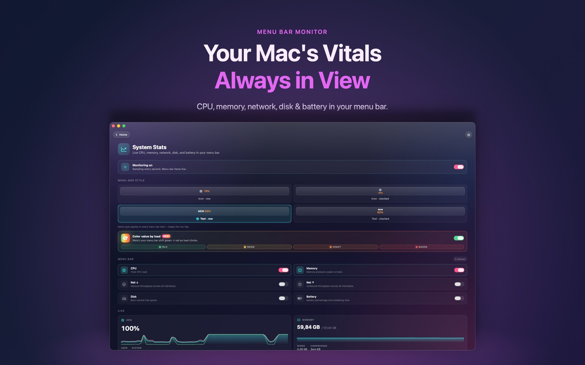
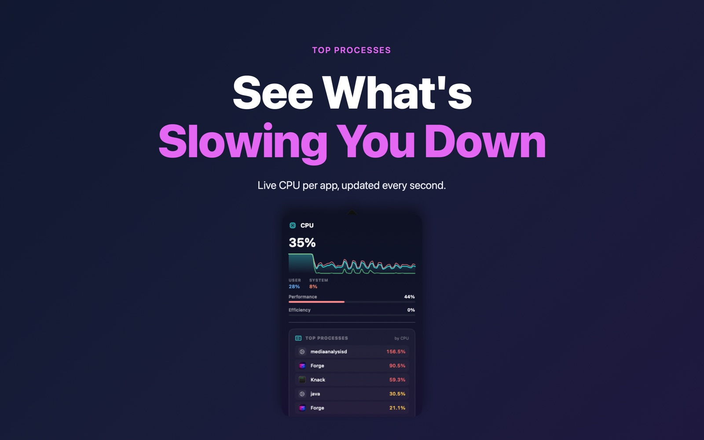

Know why your fans just spun up. Knack's System Stats puts live CPU, memory, network, disk and battery numbers in your menu bar.


No. Those need private system access that Mac App Store apps aren't allowed to use. Knack shows CPU, memory, network, disk and battery.
No. It samples once per second using Apple's public APIs and is built natively in SwiftUI.
System Stats is part of Knack Pro, a one-time purchase.
System Stats is one of more than twenty native tools in Knack — converters, PDF tools, OCR, AI photo tools and more, all running on your Mac.
Get Knack